Applications and use of whole genome sequencing in outbreak investigations.
Kelsey Florek, MPH, PhD November 21, 2019
Slides live from:
www.k-florek.net/talks
Sequencing has changed how we determine microbial relatedness
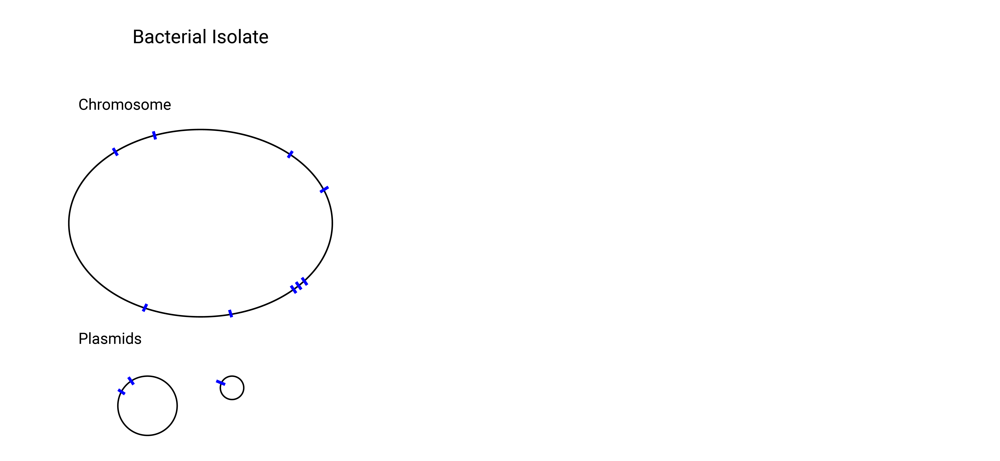Sequencing has changed how we determine microbial relatedness
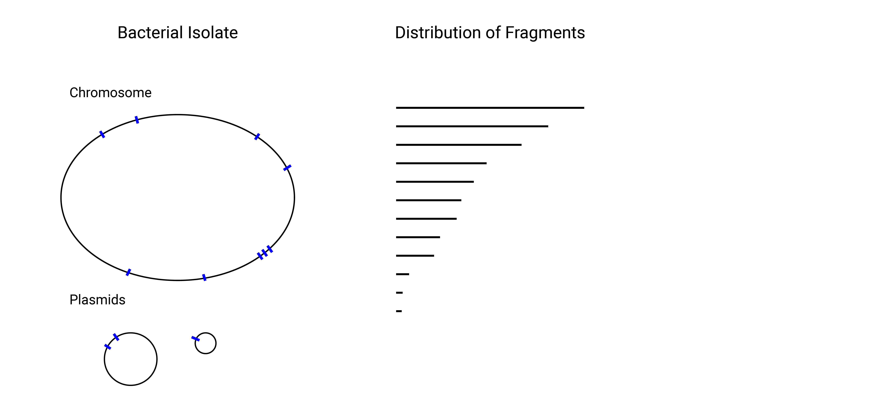Sequencing has changed how we determine microbial relatedness

Sequencing has changed how we determine microbial relatedness
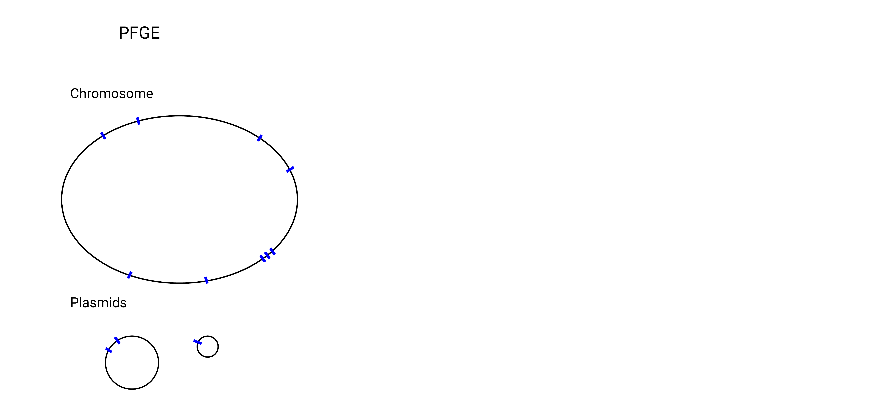Sequencing has changed how we determine microbial relatedness
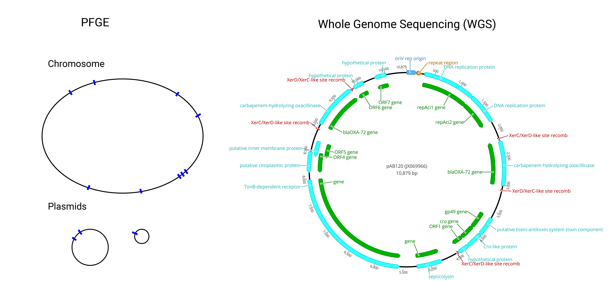Advances in Sequencing
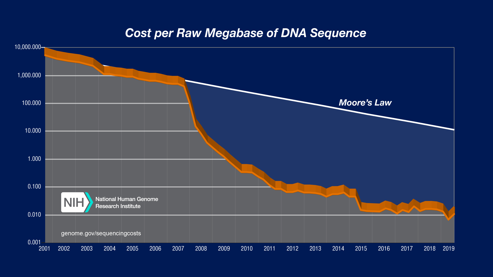Sanger Sequencing
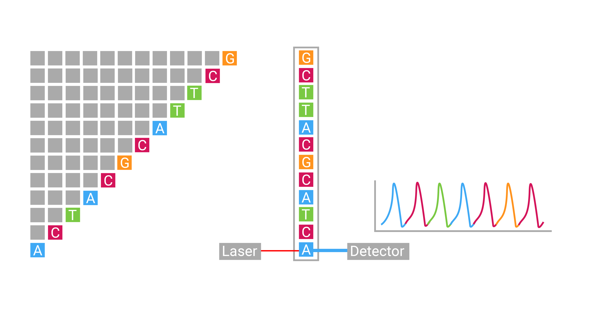Sanger Sequencing
- max length: 800bp - 1000bp
- throughput: 4 - 32 sequences per run
- cost: $10 per 1000bp
Next-Generation Sequencing
Massively parallel sequencing technology that greatly increases the throughput of genomic sequencing.
Illumina Sequencing
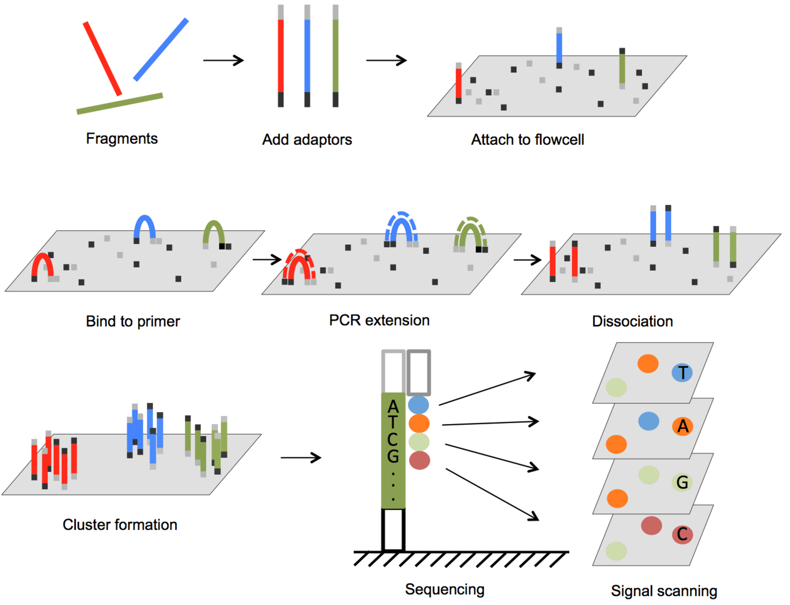
Illumina Sequencing
- max length: 2 x 300bp
- throughput: 25 million sequences per run
- cost: $0.0005 per 1000bp
Increases in data requires advanced analyses
- 15 Giga Bases generated per MiSeq run
- 40,000 - 150,000 words in a novel
- average word length in English is 4.79
- one sequencing run would generate 3,296 novels with 95,000 words each
Bioinformatics

What is Whole Genome Sequencing (WGS)?
How is it used and what can we gain from using it?
Shotgun sequencing approach
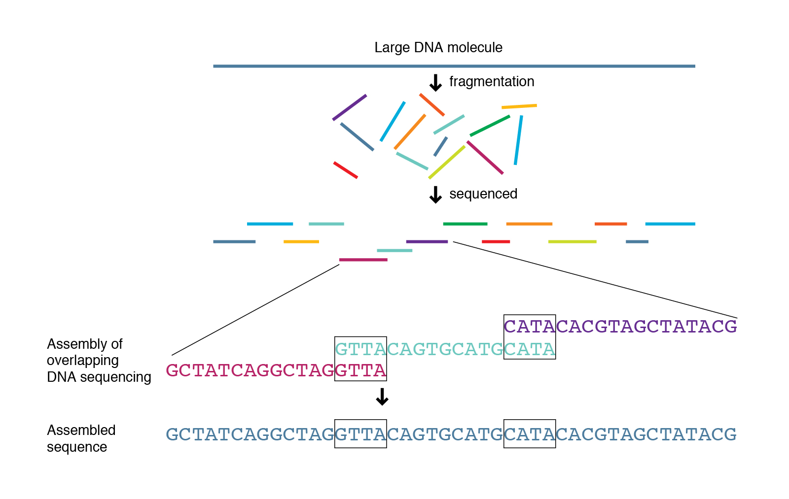Shotgun sequencing approach
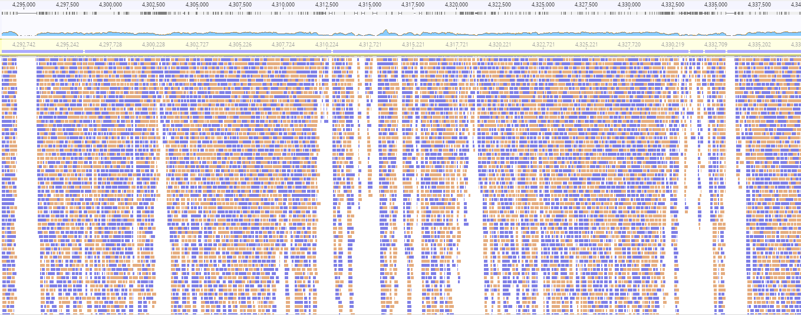To infer bacterial relationships from sequence data we have to consider the effects of evolution.
There are several approaches to measure the relatedness of isolates
- Single Nucleotide Polymorphisms or SNPs
- MLST
- wgMLST
- Core-genome Relatedness
Single Nucleotide Polymorphisms
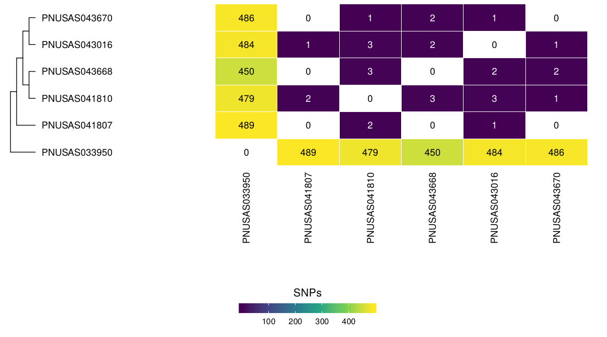Single Nucleotide Polymorphisms
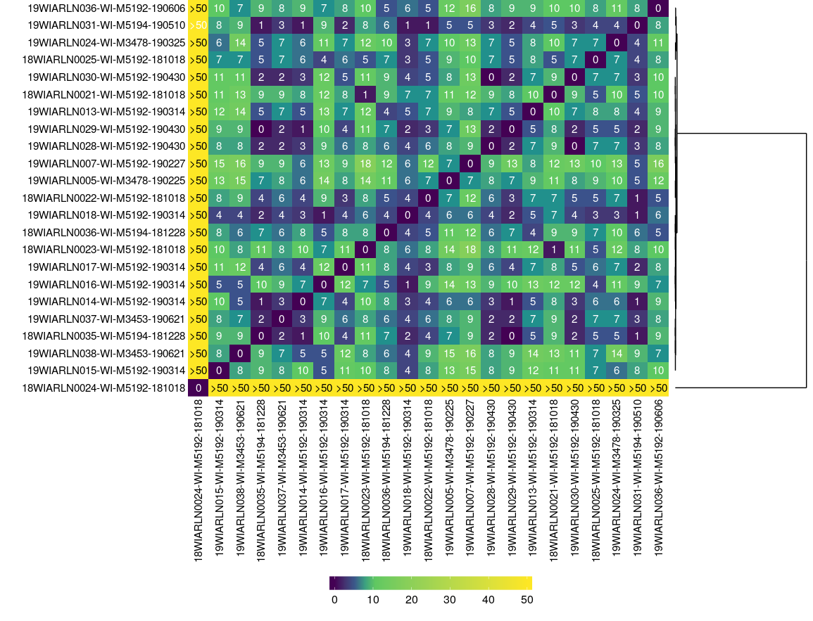Multi-locus Sequence Typing or MLST
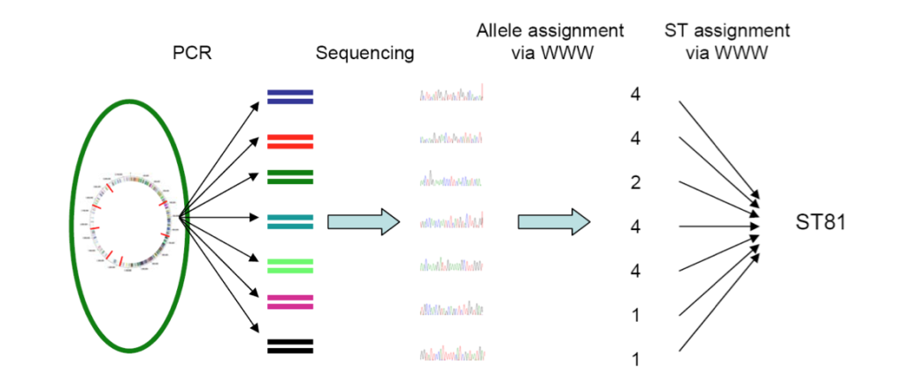whole genome MLST or wgMLST
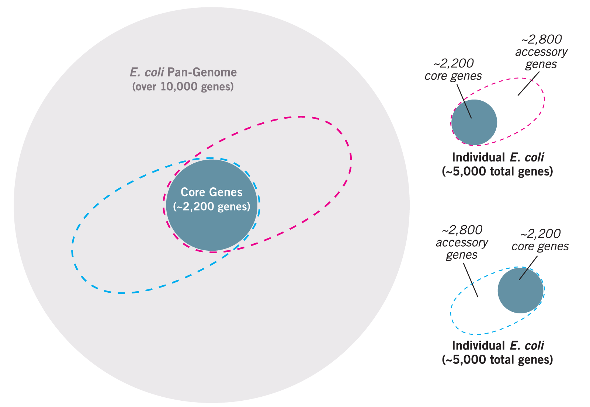whole genome MLST or wgMLST
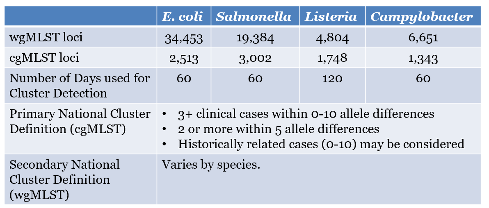core-genome comparisons
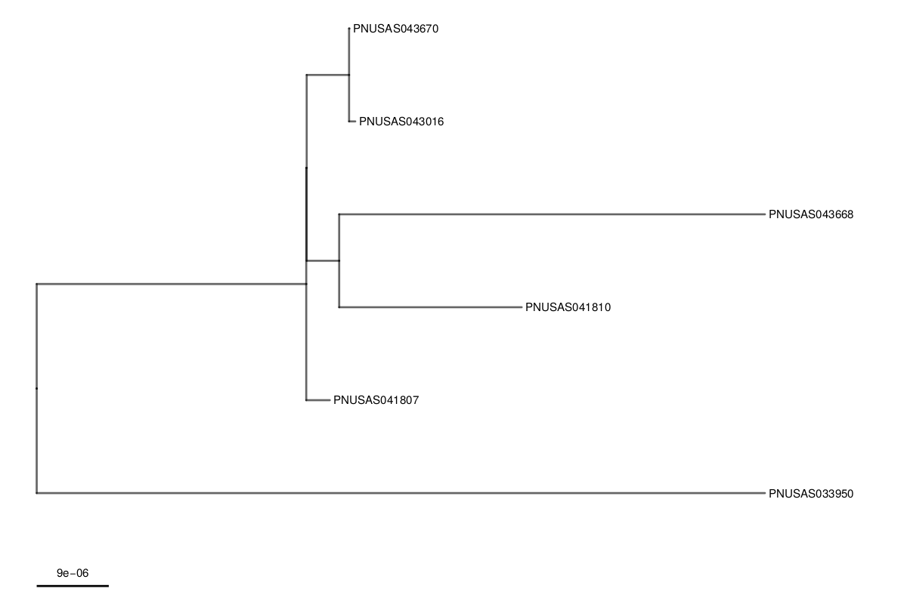Moving beyond WGS